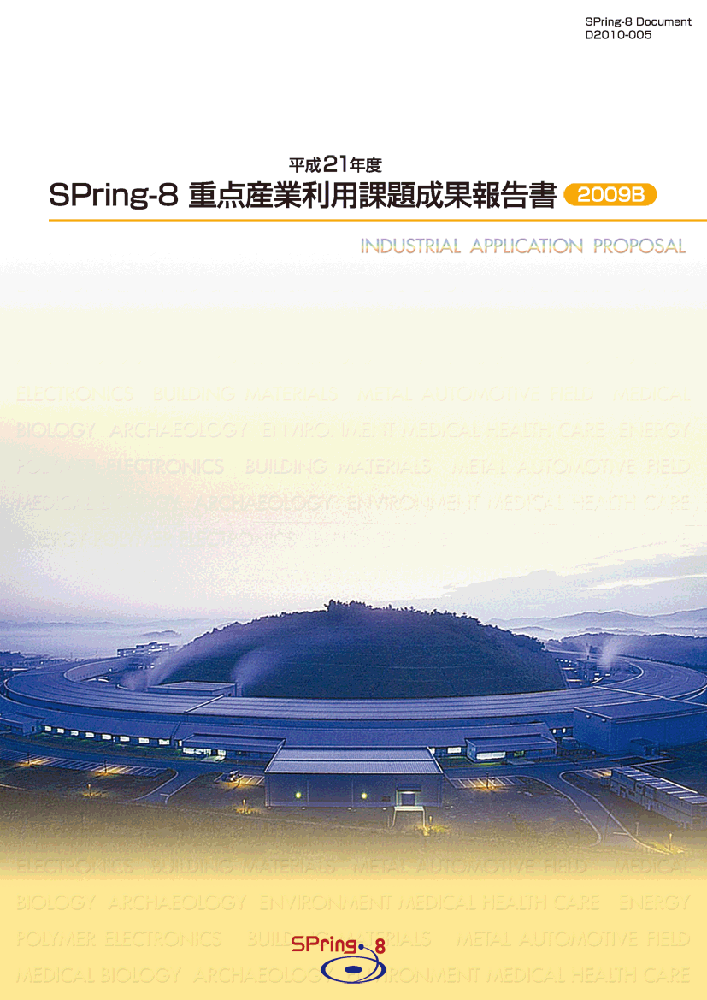
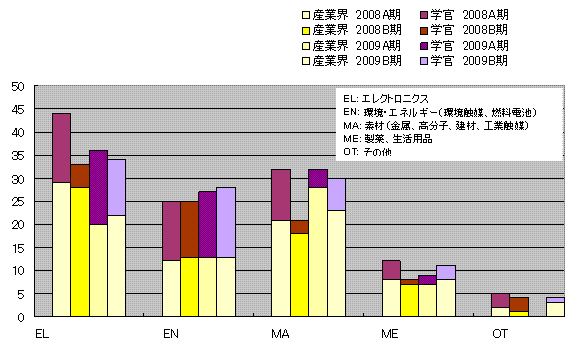
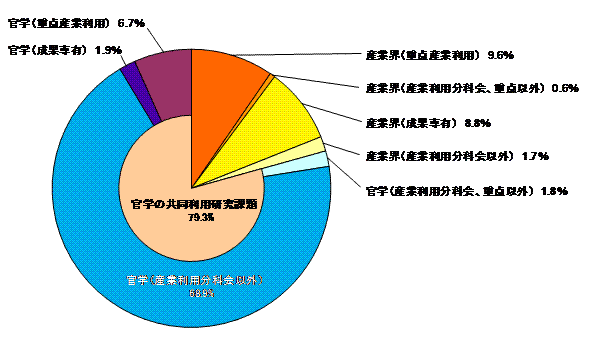
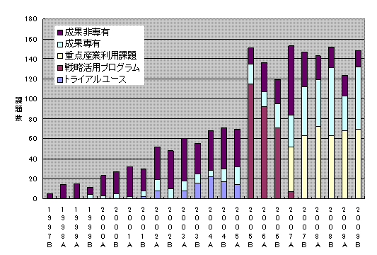
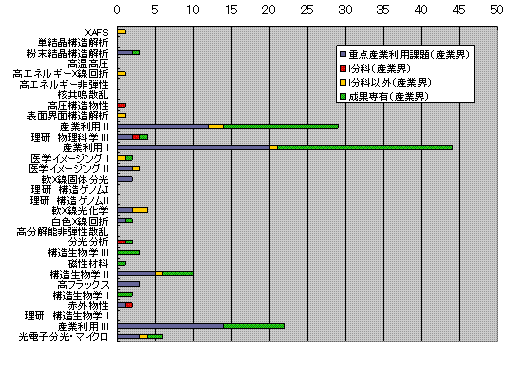

1. はじめに2. 公募の内容
3. 成果公開の考え方
4. 実施の経緯と流れ
5. 結果
6. 民間企業への波及効果と今後の課題
7. 課題利用報告書
* 送付を希望される方は、連絡先（氏名、所属、〒住所、E-mail）をご記入の上、 事務局 support@spring8.or.jp までE-mailでご連絡ください。
産業利用の更なる促進を目的に、平成17年度(2005B期)より文部科学省のプログラムとして先端大型研究施設 戦略活用プログラム（戦略活用プログラム）が実施されて支援体制の整備が進み、利用実績も増加すると共に 産業利用推進室の活動も軌道に乗ってきた。平成19年度（2007A期）から、重点産業利用課題は領域指定型の 重点研究課題の一つとして承認され、先に実施された戦略活用プログラムを継承する施策として位置付けて実施 されている。
- 公募の分類
本プログラムで募集する課題は「新規利用者」、「新領域」、「産業基盤共通」と「先端技術開発」の4つに 分類している。
「新規利用者」とは、申請代表者が、これまで、一般課題への応募などを含め、SPring-8を利用した ことのない利用者を指している。但し、事業規模が相当程度大きく事業範囲が多岐に及ぶ企業で、これらの 企業が既に利用している場合には、既に利用している事業分野とは異なる新規分野からの新たなユーザーであれ ば、「新規利用者」として認めている。
「新領域」とは、申請者の利用経験に関係なく、これまでSPring-8で実施されたことがない産業領域、あるい は、近年開発された新手法を用いることによって新たな展開が可能になる産業領域を指している。新領域の例示 を下記に示しているが、これ以外でも新規性が認められる研究領域であれば、新領域の対象になる。
○コンクリート等建築資材⇒三次元内部構造をX線CTによる撮影
○ヘルスケア⇒毛髪や皮膚の構造をX線回折・散乱及び透視画像で解析
○医薬品原薬⇒粉末X線回折による構造解析
○硬X線光電子分光法⇒薄膜材料の内部界面の状態解析
○環境負荷物質微量分析⇒大気・水などの重金属汚染物質の化学状態
○耐腐食構造材⇒金属材料の表層やサビの構造・状態分析
○高密度記録装置⇒DVD、HDD等の新規記録材料の薄膜構造・状態分析
「産業基盤共通」とは、それぞれの産業分野に共通する課題を解決する目的、あるいは産業利用に有効な手法 の共同開発を目的として、複数の企業を含むグループが一体となって取り組むもので、新計測技術の確立、共通 課題のデータベース化等を図る研究を指している。申請代表者が複数の企業を含むグループを取りまとめて、1つ の課題として申請して頂く。ここで言う「複数の企業」とは、それぞれ参加する企業が同等かつ独立に成果を 利用できる関係にあることを想定している。したがって、産学官連携の研究グループによる利用の場合には、学 と官は「複数の企業」としてカウントされない。
「先端技術開発」とは、ユーザーが実施するイノベーション型の技術開発課題で、成果の企業業績への貢献、 あるいは社会還元を目指した研究を指している。
- 公募の回数
BL19B2（産業利用Ⅰ）、BL14B2（産業利用Ⅱ）、BL46XU（産業利用Ⅲ）の3本のビームラインは、2007B期から課題 公募を2回に分けて実施している。これら3本の産業利用ビームラインを除く共用ビームラインのうち、重点産業利 用課題にビームタイムを割り当てた対象ビームラインでは、これまで通り、2009B期の課題公募では1回である。
SPring-8を利用して得られた実験・解析結果及び成果は、以下の利用報告書に取りまとめて提出してもらう。
- 利用報告書Experiment Report（英文または和文）
利用終了日から60日以内にオンライン提出。 - 重点産業利用課題報告書（原則和文）
課題採択後に利用業務部より送付される文書に記載されている締切日までに提出。 なお、提出方法は「電子データ（原則としてMSワード）」を電子メールまたは郵送で所定の宛先に提出。
上記の2009B期の報告書のうち「利用報告書Experiment Report」は2009B期終了後60日目から2週間後 にWeb上で公開される。「重点産業利用課題報告書」は印刷公表とする。ただし、利用者が提出した報告 書について、製品化や特許取得などの理由により公開の延期を希望する場合は、財団法人高輝度光科学 研究センターが適当と認めた場合に限り最大2年間延期することができる（2つの報告書自体は、締切日 までに必ず提出してもらう）。また、公開延期期間満了時には、公開延期を認められた申請時の理由に 対して、結果・成果等をまとめて報告をしてもらう。
- 重点領域の指定
重点産業利用課題が領域指定型の重点研究課題として、平成19年1月26日に重点領域推進委員会で 平成19年度と平成20年度の2年間指定を受けた。さらに平成20年10月2日の第6回選定委員会で平成23 年度までの継続が承認され、重点産業利用課題は領域指定型の重点研究課題（公募）として実施され ている。 - 課題選定
課題の選考は、学識経験者、産業界等の有識者から構成される「利用研究課題審査委員会」 （以下「課題審査委員会」という。）により実施される。課題審査委員会は、「重点産業利用領域」 として領域指定された趣旨に照らして優秀と認められる課題を選定する。
審査は非公開で行われるが、申請課題との利害関係者は当該課題の審査から排除される。また、 各委員は委員として取得した一切の情報を委員の職にある期間だけでなくその職を退いた後も第三者 に漏洩しないこと、情報を善良な管理者の注意義務をもって管理すること等の秘密保持を遵守するこ とが義務付けられている。 - 審査の手順
審査は以下の手順により実施される。- 形式審査
提出された申請書類について、応募の要件を満たしているかについて審査する。 なお、応募の要件を満たしていないものは、以降の審査の対象から除外される場合がある。 - 書類審査
課題審査委員会の下に設置する産業利用分科会により、書類審査を実施する。 - 最終審査
書類審査における評価を踏まえ、課題審査委員会において審査を実施し採択課題を決定する。
- 形式審査
- 審査の観点
審査（形式審査を除く）は、以下の観点に重点を置いて実施される。- 科学技術における先端性を有すること
- 産業利用上の成果創出に資すること
- 課題分類の趣旨に合致すること
- 研究手段としてのSPring-8の必要性
- 実験内容の技術的な実施可能性
- 実験内容の安全性
- 利用者支援
コーディネーター並びに産業利用支援グループが中心となり、課題毎に担当者をおき、 BL担当者の協力の下、全所的に利用者支援を実施した。支援の内容は、重点分野における実験環境の整備、 コーディネーター及びスタッフによる実験企画・準備、実験実施、実験解析に至る技術支援などからなる。 - 利用実験
平成21年10月6日～平成22年2月23日までに実施された利用実験課題である。 - 報告
平成21年度2009B期の重点産業利用課題の成果報告は、平成22年度内に行う。
以下に平成21年度2009B期の重点産業利用課題の応募・採択結果についてまとめる。
- 応募・採択結果
表１ 募集時期及び研究機関別応募・採択結果
＊応募数・採択数には、一般課題に分類される下記の12条課題は除外している。募集時期 機関分類 応募数＊ 採択数＊ 採択率（%） 第1回募集 学官 44 23 52.3 産業界 74 51 68.9 第2回募集 学官 32 15 46.9 産業界 36 18 50.0
第1回：8課題（学官：不採択なし）
第2回：5課題（学官：採択2課題、不採択3課題)
- 分類
表２ 募集時期及び研究機関別・領域別採択結果募集時期 領域分類 産業界 学官 産学官合計 第1回募集 産業基盤共通 0 3 3 新規利用者 6 2 8 新領域 16 3 19 先端技術開発 29 15 44 第2回募集 産業基盤共通 1 0 1 新規利用者 1 4 5 新領域 3 1 4 先端技術開発 13 10 23
- 利用報告書の公開日延期
2009B期で実施した課題について利用報告書公開日延期申請が提出された課題の内訳は次の通りである。
○公開日延長許可：22課題
理由内訳（複数回答有り）
a.知的財産権の取得のため：19課題
b.事業への適用のため：11課題（8課題はaと重複、1課題はcと重複）
c.その他の理由：3課題(2課題はaと重複、1課題はbと重複)
○公開日延長不許可：1課題
下記の表3は、公開日延期許可された課題を分野別に分類した結果を示す。
表3 分野別公開日延期許可課題
分野 課題件数 エレクトロニクス 5 環境・エネルギー 9 素材(金属・高分子等) 4 製薬・生活用品 4 その他 0 合計 22
- 産官学の動向
- 研究機関
本プログラムでは産業界にとって有効な利用手法の開発が産学官連携により積極 的に展開されるとの観点から、民間企業のみならず、大学等の公的部門からの応募 も受け入れることにしている。民間企業が実験責任者の採択課題の割合は2007A期 より約60%から70%の間で推移している。2009B期は民間企業の割合は約65%でこれま でと同様である。毎回の傾向であるが、第1回募集よりも第2回募集の方が採択され る民間企業の割合が低く、2009Bの第2回募集ではその割合が約55%である。これは、 大学等のユーザーは一般課題と同時に行われる第1回募集では、重点産業利用課題 以外の制度を利用するためと考えている。なお、07A期より08B期までは、民間企業 及び大学等研究機関からの応募が単調に増加していたが、2009A期に応募数が減少し た。これは2009A第1回募集期間前後に発生した世界的な金融危機（いわゆるリーマン ショック）の影響と思われる（企業の応募が前年同期比で約20%減少）。2009B期は 企業からの応募が回復したが、依然2008B期の約90%程度にとどまっている。
- 産業基盤共通
複数の企業を含むグループが一体となって取り組む「産業基盤共通」の課題は、 表2に示す通り2009B期では合計4課題が採択され、このうち3課題の申請代表者が 学官の研究機関である。産業基盤共通に分類される課題は2008B期までは5-7件が 採択されていたが、2009A期は3件、2009B期は4件と減少気味である。 （＊注：2009A期の重点産業利用課題成果報告書では、産業基盤共通に分類される 課題は9件と報告したが、認定要件についてより厳格な見直しを行ったところ、 産業基盤共通に認定される課題は3件、他の6件は先端技術開発に分類されるべき 課題であった。） - 分野別分類
図1は、申請代表者の申告に基づいて分類した分野別採択課題数を示している。 産学官の総計ではエレクトロニクス分野の課題が多く、次いで素材分野、環境・ エネルギー分野の順である。エレクトロニクス分野が減少する一方、環境・エネ ルギー分野は漸増している。この分野での民間企業の課題数はほぼ横ばいである 一方、官学の利用が増えている。これは、二次電池、燃料電池、太陽電池などの いわゆるグリーンエネルギー関連技術がますます注目され、官学における研究 人口が増加していることを反映したものと考えられる。
民間企業への波及効果と今後の課題図2は2009B期において、重点産業利用課題を含む共同利用研究実施課題のうち、 実験責任者が民間企業の研究者である課題数の割合を示したものである。図に示 す通り、実験責任者が民間企業の研究者である課題数は共同利用研究実施課題全体 の21％である。その内訳は、重点産業利用課題が9.6％、一般課題のうち成果専有 課題が8.8％である。この2つを合わせて18.4％となり、産業界は成果公開延期制度 をもつ重点産業利用課題と成果専有課題の2つの利用制度を旨く使い分けていること が分かる。そのことは、図3に示す課題分類別推移においてもその傾向が良くあらわ れている。即ち、2009B期は、民間企業が共同利用研究課題で実施したもののうち、 実に87％が重点産業利用課題あるいは成果専有課題の2つの利用制度で実施されて いる。この結果は、本制度が民間企業に根付いてきていることを示すものである。 また、図4は、利用技術分野別(ビームライン別)民間企業実施課題数を応募課題分類 に色分けして示したグラフである。図から明らかなように産業利用Ⅰ（BL19B2）、 産業利用Ⅱ（BL14B2）、産業利用Ⅲ（BL46XU）の3本のビームラインでは、成果専有 課題の割合が他のビームラインと比較して極端に多いことが分かる。このことは、 SPring-8の有用性が益々認識され、民間企業の実験課題がより事業領域に近い課題 へと広がりつつあることのあらわれであると考えられる。一方、成果専有課題や成 果公開優先利用課題の増加によって、重点産業利用課題に配分できるビームタイム が減少傾向にあるため、実験の効率化による採択率向上を目指した機器整備を行う ことが一層必要になっていると考えられる。

図1. 重点産業利用課題における分野別採択課題数

図2. 2009B期 共同利用研究実施課題における民間企業の実験責任者の割合

図3. 民間企業による共同利用研究実施課題の課題分類別推移

図4. 2009B期 利用技術分野別(ビームライン別)民間企業実施課題数
課題利用報告書この成果報告書に掲載される課題報告書は、2009B利用期に実施された課題のうち、 利用報告書公開日延期申請許可となったものは除いている。
- 研究機関